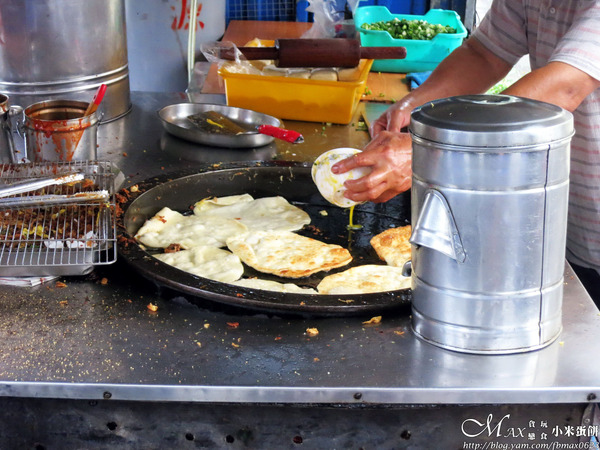

這天因為2016總統與立委的選舉。 剛好兄弟要回南投投票，就約我是否一起。 在投票結束後想到懷念的 「小米蛋餅」剛開始營業。 吃過N次卻沒好好記錄，也是我超推的銅板美食。
「小米蛋餅」位在南投市復興路上台灣銀行的正對面。 才剛開賣不久，卻已大排長龍，賣了好幾十年。
請認得這台小發財車，由一對夫妻所經營。 賣的品項超簡單，就小米蛋餅和奶茶而已。 小米蛋餅從以前的15元到現在的20元，重點有加蛋。 這種價格現在已難尋，超佛心的啦！
老闆負責揉麵糰，桿平後下鍋半油炸的方式。 還要邊顧火爐上的餅皮，待一面炸的金黃酥脆後。 再做翻面的動作，並將蛋+蔥花打在一起。 速度真的超快，根本就是快手。 另外是否注意到這飲料桶內裝的是油。 打開後油就會流入鍋內，是不是很聰明。
老闆娘的話負責裝袋、刷醬、收銀及裝奶茶。 會詢問是否要加辣，辣不會很辣，我每次來都必加。
這樣一大捲才20元，真的超便宜。 刷上的特製醬汁、還會灑上黑胡椒。 特別打開拍裡面的樣子，香氣撲鼻好誘人。
外皮煎的好酥脆，雞蛋煎的軟嫩不會太熟。 醬汁MIX後超像牛排的黑胡椒醬的風味，根本就是靈魂所在。 吃的過程會有淡淡的蔥香味散發出來。 而且吃完不會過於油膩感，好吃到快升天，人間極品！
引自:http://blog.yam.com/fbmax0623/article/123894984